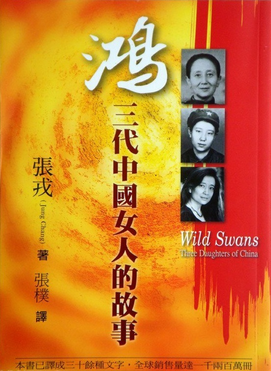

Wild Swans: Three Daughters of China
鸿：三代中国女人的故事
目录
| 1 | “三寸金莲” | ——嫁给军阀为妾 | 1909—1933年 |
| 2 | “喝凉水也是甜的” | ——成为满族医生的妻子 | 1933—1938 |
| 3 | “人人都说好满洲” | ——在日本人统治下 | 1938—1945 |
| 4 | “亡国奴” | ——走马灯似的换政府 | 1945—1947 |
| 5 | “十岁女儿，十公斤大米” | ——为新中国而战 | 1947—1948年 |
| 6 | “谈恋爱” | ——革命的婚姻 | 1948—1949年 |
| 7 | “过五关” | ——我母亲的长征 | 1949—1950年 |
| 8 | “衣锦还乡” | ——归故里，遭逢土匪 | 1950—1951年 |
| 9 | “一人得道，鸡犬升天” | ——与清官共同生活 | 1951—1953年 |
| 10 | “磨难会使你成为真正的共产党员” | ——我母亲受审查 | 1953—1956年 |
| 11 | “反右以后莫发言” | ——中国沉默了 | 1956—1958年 |
| 12 | “巧妇能为无米炊” | ——大饥荒 | 1958—1961年 |
| 13 | “千金小姐” | ——我的世界 | 1958—1965年 |
| 14 | “爹亲娘亲，不如毛主席亲” | ——对毛泽东的个人崇拜 | 1964—1965年 |
| 15 | “破字当头，立在其中” | ——文化大革命开始 | 1965—1966年 |
| 16 | “天不怕，地不怕” | ——毛的红卫兵 | 1966年6月—8月 |
| 17 | “你要我们的孩子变成黑五类吗？” | ——父母进退两难 | 1966年8月—10月 |
| 18 | “特大喜讯” | ——进京朝圣 | 1966年10月—12月 |
| 19 | “欲加之罪，何患无辞” | ——父母受折磨 | 1966年12月—1967年 |
| 20 | “我不出卖灵魂” | ——父亲被捕 | 1967—1968年 |
| 21 | “雪中送炭” | ——姐弟们、朋友们 | 1967—1968年 |
| 22 | “劳动改造” | ——到喜马拉雅山边去 | 1969年1月—6月 |
| 23 | “书读得越多越蠢” | ——我当农民，也当赤脚医生 | 1969年6月—1971年 |
| 24 | “容我朝暮谢过，以赎前愆” | ——我父母在干校 | 1969—1972年 |
| 25 | “香风味” | ——与《电工手册》、《六次危机》为伴的新生活 | 1972—1973年 |
| 26 | “外国人放个屁都是香的” | ——在毛泽东治下学英语 | 1972—1974年 |
| 27 | “如果这是天堂，地狱又是什么样子呢？” | ——父亲之死 | 1974—1976年 |
| 28 | “长上翅膀飞” | 1976—1978年 |
责任编辑：王月林
封面设计：马东源
鸿——三代中国女人的故事
张戎 著 张朴 译 *
内蒙古人民出版社出版 （呼和浩特市新城西街20号）
各地新华书店经销
电子工业印刷厂印刷
开本：880×1168 1/32
印张：16.5
字数350千
插页：16
1997年9月第1版
1997年9月第1次印刷
印数：0001-5200册 ISBN 7-204-03161-X/1.672
定价：22.80元
本书由大海数字化整理发布
献 给 ——未能活着看到这本书出版的 我的姥姥与父亲
书中家庭成员及著名人士绝大多数是真名，其他人名均系虚构，所做的事情则是若干真人真事的合成。 ——张戎
